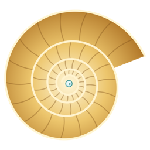
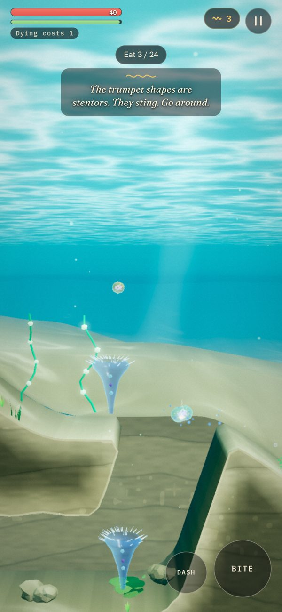
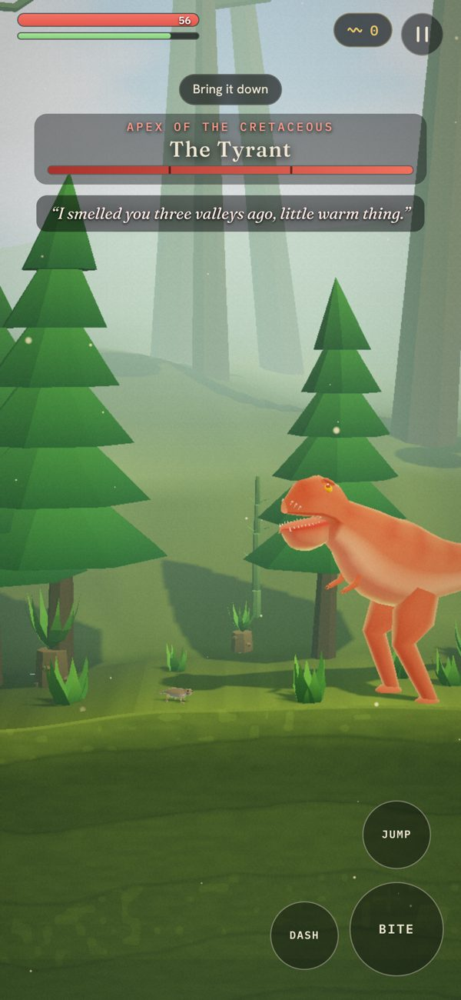
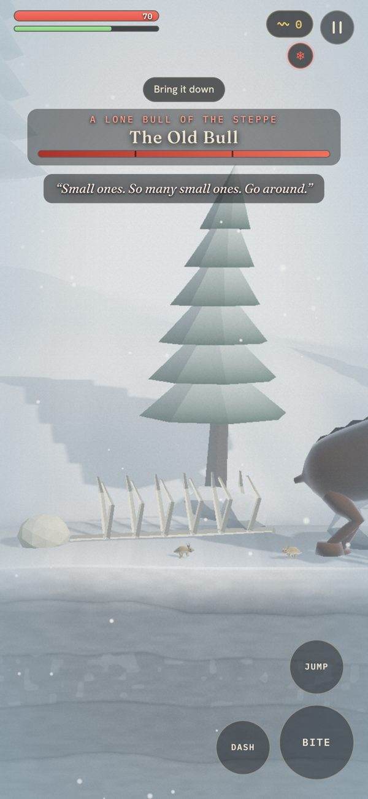

EvolvariaFour billion years. One unbroken line.
Evolvaria is a hand-built action platformer about the real history of life. Begin as a single cell in a hot ocean vent and play forward through eight ages, from the first oceans and the Cambrian reef to the dinosaurs, the ice ages, the first humans and a future where something new starts to think.



64 hand-built stages and 8 hidden ones, over 100 traits that reshape your body, bosses from deep time, fossils to find and 21 endings. Every creature and age is drawn from the fossil record.
Free to play on iPhone, with one purchase to remove ads.